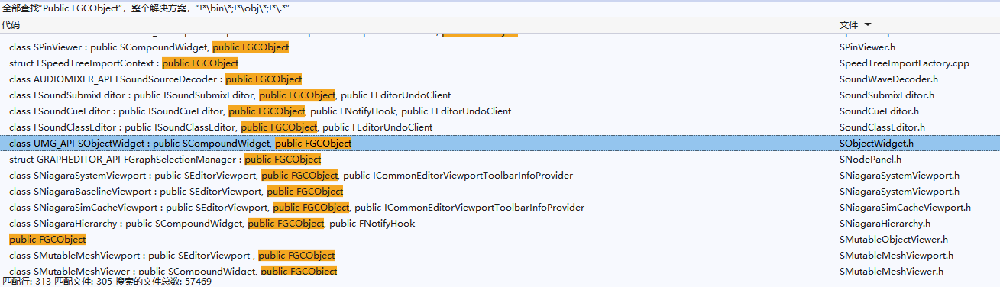

Unreal Engine C++ 编程文档¶
前言¶
Unreal Engine 是一个由 C++ 编写的 强大引擎，但由于 构建工具（UBT） 和 反射编译器（UHT） 的存在 ，导致它有着独立于C++标准的语法，因此网友们也戏称它为 U++ 。
不仅语法上存在一定差异，Unreal Engine下的开发流程也与平常的C++开发流程大相径庭。举例来说，STL标准库就像是一个工具箱（Toolkit）， We use it to develop ，而 Unreal Eninge 则更像是一个开发平台（Platform）， We develop based on it 。
当下U++教程和书籍并不多，其中对开发者而言作用较大的系列文章有：
Unreal Engine 匮乏的文档和晦涩的代码对C++初学者而言几乎就是一道天堑，不可逾越，这是因为Unreal Engine这种工业级别的项目有着许多的开发人员，它的代码体量庞大，且迭代很快，想要整理和归纳它的发展过程是一件非常困难的事情。
笔者翻阅了一些U++的视频教程，比较零碎，大多是一些披着UE皮的C++基础教程，介绍的内容有限，且存在比较多的盲区，学习收益并不是很大。
如果有发现好的教程，小伙伴也可以在评论区推荐~
想要上手Unreal Engine，往往需要具备中大型C++项目的工程能力，可以明确的说， 它并不适合C++初学者
如果你是一个还在上学的学生，机缘巧合下发现了Unreal Engine这么一个神奇的东西，被它绚丽的画面效果所吸引，心血来潮想要学习U++开发，那么你应该思考一下，自己除了会刷题和写论文，是否还具备以下技能：
- 熟悉 C++ 的工程构建
- 对引擎中的各个子模块有一定认知，具备中大型项目源码的阅读能力
如果没有，那么笔者建议你再静下心来好好打磨一下，而不是硬着头皮直接上
基础得经历长年打磨才能变得牢靠，而技术也是一点一点地慢慢积累，才能一层一层地逐渐搭高，不能想着什么弯道超车，听别人吹嘘谁谁谁，随随便便折腾几下，技术就多么多么牛，但实际上， 在工业界，没有不努力的天才 ，至少在笔者所敬重的人中，无一例外，而技术并无强弱之分，大多时候无非是 闻道有先后，术业有专攻
拿笔者的经历来说，笔者在三年前学过的一段时间U++，当时是把官方文档给过了一遍，然后照着这个教程敲了一遍：
过完之后迷迷糊糊的，感觉很多代码莫名其妙，有太多知识雾区，干脆放弃了，倒不如去学一些自己能够看得见摸得着的东西，所以去看了 Qt，CMake，OpenGL，一些图形学知识和数字信号的东西，然后做了它：
当我能熟练掌握这些技能之后，再回头去看 Unreal Engine 时，哇，一片明朗~
当看到 UBT（Unreal Build Tool） 的时候，哦，原来它的用途跟CMake一样，用来管理工程构建，可以利用它去做这些操作：
- 给构建目标添加 依赖库（Library ）， 包含目录（Include Directories） ， 宏定义（Definitions）
- 设置编译器配置
- 执行构建脚本
瞄见 UHT（Unreal Header Tool） 的时候，我想到了Qt的Moc（Meta Object Compiler），工作流程就是扫描代码头文件，得到一些信息，然后生成新的代码文件添加到构建目标中，使用它来实现UE的代码反射，而通过反射，可以实现基于类型的控件，基于对象的面板，还能自行组织反射数据，从而实现像蓝图这样的可视化编程脚本。
遇到 Slate ，根本都不需要文档，就能猜到：
- FSlateApplication 是一个全局单例，它是所有UI的调度中心，它里面可以获取和设置整个应用的状态，并提供一些有用的操作
- SWindow 是顶层窗口，它持有跨平台的窗口实例（FGenericWindow），提供窗口相关的配置和操作。
- SWidget 用来划分窗口区域，处理自身区域内的交互和绘制事件，看到它的第一反应是查阅它有哪些可供设置的属性，哪些可以覆盖的事件虚函数，以及怎么处理它PaintEvent
再把一些基础的GUI概念给映射过来：
- 窗口的基本状态 ：激活（Active），焦点（Focus），可见（Visible），模态（Modal），变换（Transform）
- 布局策略及相关概念 ：
- 盒式布局（HBox，VBox），流式布局（Flow），网格布局（Grid），锚式布局（Anchors），重叠布局（Overlap），画布（Canvas）
- 内边距（Margin），外边距（Padding），间距（Spacing），对齐方式（Alignment）
- 样式管理 ：图标（Icon），风格（Style），画刷（Brush）
- 字体管理 ：字体类型（Font Family），文本宽度测量(Font Measure)
- 尺寸计算 ：控件尺寸计算策略
- 交互事件 ：鼠标，键盘，拖拽，焦点事件，事件处理机制，鼠标捕获
- 绘制事件 ：绘制元素，区域裁剪
- 基本控件 ：标签（Label），按钮（Button），复选框（Check），组合框（Combo），滑动条（Slider），滚动条（Scroll Bar），文本框（Text），对话框（Dialog），颜色选取（Color），菜单栏（Menu Bar），菜单（Menu），状态栏（Status Bar），滚动面板（Scroll ），堆栈（切换）面板（Stack/Switcher），列表面板（List），树形面板（Tree），停靠窗口（Dock），...
- 国际化 ：文本本地化翻译（Localization）
Ok，我发现我也能用Slate实现自己能想象到任何界面效果。
看到 RHI（Rendering Hardware Interface） ，我能联想到它对应OpenGL/Vulkan里的什么操作，如果要做自定义扩展，那无非就是照猫画虎。
碰上 Niagara ，知道GPU粒子只不过是通过Compute Pipeline在交互链上模拟粒子运动，利用原子操作和间接渲染去做粒子回收，最终将粒子数据作为实例化数据绑定到粒子渲染器的参数上，从而渲染出粒子特效，而Niagara中的Module，也只是在组织Compute Shader的代码和流水线资源，正因为知道粒子系统的实现原理，所以对Niagara的流程和性能非常敏感。
看到 Wolrd ， Actor ， Component ， Controller ...，才恍然意识到Gameplay架构原来可以使用这么多结构去划分代码的职责，比我这半吊子水平做的好太多了~
诸如此类，可以说，当我放弃跟着一些文档和教程随波逐流之后，反倒是那些在通用框架上建立起来的知识体系，让我在回头审视 Unreal Engine 时，有了 ”不同寻常“ 的思考维度 —— 一个引擎里面应该有什么东西，哦，Unreal Engine里面也有，且做的很好。
因此，如果你还不具备中大型C++的工程能力，笔者建议你可以学习一下Qt，或者一些开源的，轻量级的，基础文档齐全的引擎，如果能尝试自己搭建一个出来，那就更好了~
在建立起扎实的基础知识体系之后，后续学习的重点主要是 思路
本文旨在阐述基础开发的主干路线，仅仅只是一个开发者文档，并非教程。
工程结构¶
一个标准的UE工程的文件结构如下：

Config：存放项目中的各类配置文件（GameConfig，EngineConfig，EditorConfig，PluginConfig...）Content：存放项目的资源文件Saved：暂存目录，项目开发过程中生成的文件一般都位于此，包括日志，崩溃记录，烘焙，本地编辑器配置等Source：存放项目的源码文件MyProj.uproject：项目工程文件
uproject¶
*.uproject 存储了工程的一些基本信息，它的初始结构如下：
{
"FileVersion": 3,
"EngineAssociation": "5.2",
"Category": "",
"Description": "",
"Modules": [
{
"Name": "MyProj",
"Type": "Runtime",
"LoadingPhase": "Default"
}
],
"Plugins": [
{
"Name": "ModelingToolsEditorMode",
"Enabled": true,
"TargetAllowList": [
"Editor"
]
}
]
}
该文件的关键参数有：
EngineAssociation：引擎的版本Modules：该工程拥有的代码模块Plugins：该工程开启的 内置 插件
这些参数虽然可以手动修改，但大多时候，在UE的编辑器上进行变更会更加安全和任意。
切换引擎版本¶
在*.uproject 的右键菜单下，可以切换当前工程的引擎版本：

{kind=link}
如果引擎没有出现在选择框的下拉列表中，则需要到下方目录使用 UnrealVersionSelector-Win64-Shipping.exe 进行注册：
{kind=link}
开启内置插件¶
在引擎中，开启内置插件后，编辑器会自动在*.uproject 文件的Plugins下追加新的插件条目：
{kind=link}
添加工程模块¶
模块（Modules） 是 虚拟引擎（UE） 的软件架构的基础构建块。它们在独立的代码单元中封装了一体的编程工具、运行时功能、库或其他功能。
使用模块化编程可以带来以下好处：
- 模块会强制实施良好的代号分离，可用于封装功能和隐藏代号的内部成分。
- 模块编译为单独的编译元。这意味着，只有已经更改的模块才需要编译，更大项目的编译时间会显着缩短。
- 模块在依赖性图表中链接在一起，并且只允许允许实际使用的代码包包含头文件，以符合Include What You Use (IWYU)标准。这意味着，你的项目中未使用的模块将安全地排除在编辑中之外。
- 你可以控制在运行时任何时候加载和加载实体的模块。 这样一来，可以管理哪些系统可用并活跃，从而优化项目的性能。
- 你可以基于特定条件（例如，项目是为哪个平台编写的），在你的项目中纳入或排除模块。
所有项目和插件在默认情况下都有自己的 主模块
在UE编辑器主面板-工具（Tools）- 调试（Debug） - 模块（Modules），可以看到当前工程开启的所有模块：
{kind=link}
关于模块的创建，请参阅：
- 虚幻引擎模块：https://docs.unrealengine.com/5.2/zh-CN/unreal-engine-modules/
- 创建Gameplay模块：https://docs.unrealengine.com/5.2/zh-CN/how-to-make-a-gameplay-module-in-unreal-engine/
除了阅读文档，你还必须了解C++项目构建的一些基础概念：
*.Build.cs是UE模块的构建文件，它里面定义了该模块的构建规则，其中就包含了包含路径，依赖库，编译选项等。（类似于CMake的CMakeLists.txt）
一个基本的*.Build.cs 结构如下：
using UnrealBuildTool;
using System.IO; // for Path
public class ModuleName : ModuleRules
{
public ModuleName(ReadOnlyTargetRules Target) : base(Target)
{
PCHUsage = ModuleRules.PCHUsageMode.UseExplicitOrSharedPCHs;
PublicIncludePaths.AddRange(
new string[] {
// ... add public include paths required here ...
}
);
PrivateIncludePaths.AddRange(
new string[] {
// ... add other private include paths required here ...
}
);
PublicDependencyModuleNames.AddRange(
new string[]
{
"Core",
"CoreUObject",
"Engine",
// ... add other public dependencies that you statically link with here ...
}
);
PrivateDependencyModuleNames.AddRange(
new string[]
{
// ... add private dependencies that you statically link with here ...
}
);
}
}
- UE的构建工具（UBT）会根据
*.Build.cs生成项目的 工程文件 （VS工程的*.sln文件） ，所以当修改了*.Build.cs的内容或者模块的代码文件结构，需要使用UBT重新生成工程文件，这样IDE才能对变更的代码和依赖关系进行分析。 - 包含路径和依赖库是C++工程构建的基本概念。
- 包含路径用于增加头文件定义的搜索路径。
- 依赖库用于给当前模块 链接（Link） 外部模块的实现。
假如项目中存在一个C++头文件 D:/Unreal Projects/MyProj/Source/MyProj/MyHeader.h，要想使用它里面的代码定义，可以直接使用：
如果在*.Build.cs 中的IncludePaths添加了"D:/Unreal Projects/MyProj/Source/MyProj"，那么就可以换成：
如果想在当前模块使用其他模块的代码，只需要在*.Build.cs 的DependencyModuleNames中添加目标模块即可
如果没有做这一步，在编译的时候会报链接错误（Link Error），这个时候只需要找到所使用结构的代码文件，通过IDE找到该文件位于哪个
*.Build.cs下，将它的模块名字添加到DependencyModuleNames中就能解决这个问题。
Public和Private的差异¶
简单而言，Public代表可传递，Private代表仅自己使用。
假设有三个模块A，B，C，他们的代码文件结构如下：
- 文件夹A
- A.Build.cs
- Public文件夹
- a.h
- Private文件夹
- A.h
-
文件夹B
- B.Build.cs
- Public文件夹
- b.h
- Private文件夹
- B.h
-
文件夹C
- C.Build.cs
- Public文件夹
- c.h
- Private文件夹
- C.h
*.Build.cs 的伪代码如下：
public class A(ReadOnlyTargetRules Target) : base(Target){
}
public class B(ReadOnlyTargetRules Target) : base(Target){
PrivateDependencyModuleNames.AddRange( new string[] { "A"});
}
public class C(ReadOnlyTargetRules Target) : base(Target){
PublicDependencyModuleNames.AddRange( new string[] { "B"});
}
如果在 c.h 中去使用模块A和B的文件，将导致以下结果：
#include "C.h"
//【编译报错0】,Private文件夹并不是模块C的搜索路径。
#include "b.h"
//编译正常，UE会将模块自身的 Public目录 自动加入到 Build.cs 的 PublicIncludePaths 中，又由于 模块C的公有依赖 中加入了 模块B
//所以 模块B的PublicIncludePaths 也会传递给 模块C，因此模块C中可以正常访问B中的Public目录
#include "B.h"
//【编译报错1】，模块C无法访问到模块B的Private目录
#include "A.h"
//【编译报错2】，由于 模块C的公有依赖 中加入了 模块B，而 模块B 却只是在私有依赖 中加入了 模块A
//因此B中可以正常使用A中的Public内容，但C不能使用A
#include "a.h"
//【编译报错3】，模块C无法访问到模块A的任何内容
要去除以上报错，可以将*.Build.cs 的结构改为：
public class A(ReadOnlyTargetRules Target) : base(Target){
PublicIncludePaths.AddRange( new string[] { "Private"}); //修复【编译报错3】，将模块A的Private文件夹添加到公有包含路径中
}
public class B(ReadOnlyTargetRules Target) : base(Target){
PublicDependencyModuleNames.AddRange( new string[] { "A"}); //修复【编译报错2，3】，将模块A作为模块B的公用依赖，表示可传递依赖
PublicIncludePaths.AddRange( new string[] { "Private"}); //修复【编译报错1】，将模块B的Private文件夹添加到公有包含路径中
}
public class C(ReadOnlyTargetRules Target) : base(Target){
PublicDependencyModuleNames.AddRange( new string[] { "B"});
PublicIncludePaths.AddRange( new string[] { "Private"}); //修复【编译报错0】，将模块C的Private文件夹添加到公有包含路径中
}
看完上面的例子，理解Public和Private的区别并不难：
- Public 表示可传递
- Private 表示仅当前使用
读者可能会好奇，直接统一使用Public不就好了，能省去很多操作，那为什么不全用Public呢？是因为它也会带来问题：
- 定义冲突：当引入的模块出现重叠的定义（类，函数，全局变量）时，会导致编译报错。
- 编译缓慢：假如模块B引入了模块A，当模块A的代码变动时，也会触发B模块的重编译，所以大量的非必要依赖会严重拖垮编译的速度，例如
#include "CoreMinimal.h"也会导致这样的问题。
为了让模块不会出现编译冲突的风险和编译缓慢的问题，所以在写模块的时候，应尽可能使用Private，当模块需要对外传递时，才考虑用Public。
对象系统¶
虚幻引擎的逻辑主体采用了面向对象的设计范式，为了让所有 类（Class） 拥有统一的管理方式，虚幻也像其他面向对象框架一样，提供了自己的基类 —— UObject
结构¶
它的结构层次如下：

它主要由三级结构构成，这三级结构有着不同的职责：
- UObjectBase ：数据层，定义了UObject全部的基础数据，其中包括：
- ObjectFlags ：Object的各类标识
- InternalIndex ：UE中所有Object的指针都存放在一个数组中，这里记录index便于在数组中快速定位，主要用于GC
- ClassPrivate ：Object的元类型 — UClass：存储着该类的反射数据
- NamePrivate ：Object的名称
- OuterPrivate ：持有该Object的对象（与序列化有关， 跟生命周期无关 ）
- UObjectBaseUtility ：数据接口层，提供了很多数据层的处理接口。

- UObject ：功能层，提供了大量对象系统的基本函数接口。
在 UObjectBase 的构造函数中有这样的代码：
UObjectBase::UObjectBase(UClass* InClass, EObjectFlags InFlags, EInternalObjectFlags InInternalFlags, UObject *InOuter, FName InName)
: ObjectFlags (InFlags)
, InternalIndex (INDEX_NONE)
, ClassPrivate (InClass)
, OuterPrivate (InOuter)
{
check(ClassPrivate);
// Add to global table.
AddObject(InName, InInternalFlags);
}
其中AddObject会将新建的UObject地址，存放到全局变量 GUObjectArray 中，它位于：Runtime\CoreUObject\Private\UObject\UObjectHash.cpp
FUObjectArray 的定义位于Runtime\CoreUObject\Public\UObject\UObjectArray.h，它内部主要用于管理所有的Object，簇，GC，其主要数据成员如下：
class FUObjectArray{
//typedef TStaticIndirectArrayThreadSafeRead<UObjectBase, 8 * 1024 * 1024 /* Max 8M UObjects */, 16384 /* allocated in 64K/128K chunks */ > TUObjectArray;
typedef FChunkedFixedUObjectArray TUObjectArray;
// note these variables are left with the Obj prefix so they can be related to the historical GObj versions
/** First index into objects array taken into account for GC. */
int32 ObjFirstGCIndex;
/** Index pointing to last object created in range disregarded for GC. */
int32 ObjLastNonGCIndex;
/** Maximum number of objects in the disregard for GC Pool */
int32 MaxObjectsNotConsideredByGC;
/** If true this is the intial load and we should load objects int the disregarded for GC range. */
bool OpenForDisregardForGC;
/** Array of all live objects. */
TUObjectArray ObjObjects;
/** Synchronization object for all live objects. */
mutable FCriticalSection ObjObjectsCritical;
/** Available object indices. */
TArray<int32> ObjAvailableList;
/**
* Array of things to notify when a UObjectBase is created
*/
TArray<FUObjectCreateListener* > UObjectCreateListeners;
/**
* Array of things to notify when a UObjectBase is destroyed
*/
TArray<FUObjectDeleteListener* > UObjectDeleteListeners;
};
还有一个关键结构是 FUObjectHashTables ，它是一个单例类，存放了大量用于快速查找的映射，其代码结构如下：
struct FHashBucket{
void *ElementsOrSetPtr[2]; //可能是UObjectBase* ，也可能是 TSet<UObjectBase*>*
};
template <typename T>
class TBucketMap : private TMap<T, FHashBucket>{
//...
};
class FUObjectHashTables
{
/** 线程锁 */
FCriticalSection CriticalSection;
public:
TBucketMap<int32> Hash; //Id到Object的映射
TMultiMap<int32, uint32> HashOuter; //Id到父对象ID的映射
TBucketMap<UObjectBase*> ObjectOuterMap; //Object 到 子对象集合 的映射
TBucketMap<UClass*> ClassToObjectListMap; //UClass 到 其所有实例 的映射
TMap<UClass*, TSet<UClass*> > ClassToChildListMap; //UClass 到 其派生Class 的映射
TAtomic<uint64> ClassToChildListMapVersion;
TBucketMap<UPackage*> PackageToObjectListMap; //包 到 对象集 的映射
TMap<UObjectBase*, UPackage*> ObjectToPackageMap; //对象 到 包 的映射
static FUObjectHashTables& Get()
{
static FUObjectHashTables Singleton;
return Singleton;
}
//...
};
创建¶
一个简单的UObject类定义如下：
#pragma once
#include "UObject/Object.h"
#include "CustomObject.generated.h" //如果存在 #include "{文件名}.generated.h" ，UE则会使用UHT生成该文件的反射数据
UCLASS()
class UCustomObject :public UObject {
GENERATED_BODY() //GENERATED_BODY() 反射的入口宏，UHT会生成该宏的定义，里面定义了一些结构塞到UCustomObject的类定义中
public:
UCustomObject() {}
};
创建UObject的对象实例一般情况下会使用函数NewObject<>()，例如NewObject<UCustomObject>()，它的完整函数定义如下：
/**
* Convenience template for constructing a gameplay object
*
* @param Outer the outer for the new object. If not specified, object will be created in the transient package.
* @param Class the class of object to construct
* @param Name the name for the new object. If not specified, the object will be given a transient name via MakeUniqueObjectName
* @param Flags the object flags to apply to the new object
* @param Template the object to use for initializing the new object. If not specified, the class's default object will be used
* @param bCopyTransientsFromClassDefaults if true, copy transient from the class defaults instead of the pass in archetype ptr (often these are the same)
* @param InInstanceGraph contains the mappings of instanced objects and components to their templates
* @param ExternalPackage Assign an external Package to the created object if non-null
*
* @return a pointer of type T to a new object of the specified class
*/
template< class T >
FUNCTION_NON_NULL_RETURN_START
T* NewObject(UObject* Outer,
const UClass* Class,
FName Name = NAME_None,
EObjectFlags Flags = RF_NoFlags,
UObject* Template = nullptr,
bool bCopyTransientsFromClassDefaults = false,
FObjectInstancingGraph* InInstanceGraph = nullptr,
UPackage* ExternalPackage = nullptr)
{
if (Name == NAME_None)
{
FObjectInitializer::AssertIfInConstructor(Outer, TEXT("NewObject with empty name can't be used to create default subobjects (inside of UObject derived class constructor) as it produces inconsistent object names. Use ObjectInitializer.CreateDefaultSubobject<> instead."));
}
#if DO_CHECK
// Class was specified explicitly, so needs to be validated
CheckIsClassChildOf_Internal(T::StaticClass(), Class);
#endif
FStaticConstructObjectParameters Params(Class);
Params.Outer = Outer;
Params.Name = Name;
Params.SetFlags = Flags;
Params.Template = Template;
Params.bCopyTransientsFromClassDefaults = bCopyTransientsFromClassDefaults;
Params.InstanceGraph = InInstanceGraph;
Params.ExternalPackage = ExternalPackage;
return static_cast<T*>(StaticConstructObject_Internal(Params));
}
关于Object的创建，这里需要注意几点：
-
Outer 跟 Object 的生命周期没有任何关系 ：Outer 参数是为了指明当前对象 在存储上 隶属于哪个父对象，它跟资产序列化有关。
-
可以通过UClass来创建对象 ：
NewObject<UCustomObject>()等价于NewObject<UObject>(GetTransientPackage(), UCustomObject::StaticClass())
通常，我们在虚幻引擎中接触到的绝大部分对象，它都是一个 UObject ，在代码层面，要创建任意的UObject，我们一般会使用这种方式：
UObject* MyObject = NewObject<UObject>();
UTexture2D* MyTexture = NewObject<UTexture2D>();
UBlueprint* MyBlueprint = NewObject<UBlueprint>();
UStaticMesh* MyStaticMesh = NewObject<UStaticMesh>();
UNiagaraSystem* MyNiagaraSystem = NewObject<UNiagaraSystem>();
AActor* MyActor = NewObject<AActor>();
UStaticMeshComponent* MyStaticMeshComponent = NewObject<StaticMeshComponent>();
UWorld* World = NewObject<UWorld>();
...
这些语句在虚幻中并没有语法上的错误，它是可以编译通过的。
但熟悉虚幻的小伙伴可能比较清楚，如果直接这样去创建对象，虽然确实能创建成功，但它的某些机制很有可能不能正常工作，因为那些类型伴随着特定的构造数据和逻辑，而引擎往往会将它包裹成新的接口，比如：
- 使用
UWorld::CreateWorld(...)构造 UWolrd - 使用
UWorld::SpawnActor( ... )在对应世界中创建Actor - 使用
FKismetEditorUtilities::CreateBlueprint(...)在编辑器下创建蓝图（UBlueprint） - 在Actor的构造函数中使用
UObject::CreateDefaultSubobject(...)来创建隶属于当前Actor的组件结构 - ...
因此如果使用NewObject()创建的对象某些机制不能正常工作，很有可能引擎封装了特定的构造逻辑，如果没找到，可以试着寻找那些初始化和注册的逻辑，然后手动执行它。
销毁¶
除了UObject对象的创建，它的销毁，即生命周期的管理，也非常重要。
众所周知，虚幻拥有一套自动的垃圾回收机制，这是一种基于对象引用 定时定量 的回收方式。
对于开发者而言，通常我们不需要深入去剖析该机制的执行原理，而是掌握它的基本使用就够了，而基本使用主要有以下几点：
- 引擎如何界定一个对象是不是垃圾？
- 如何配置和使用GC？
UE中想让一个对象不被视为垃圾，其中 直接的途径 有四种：
-
在
NewObject时，使用EObjectFlags::RF_Standalone标识，该标识能保证创建的对象在 编辑器 中一直不会被GC回收（详见GarbageCollection.h line28） -
使用函数
void UObject::AddToRoot()可以将对象加入到根对象集合中，从而让对象不会被释放，使用void UObject::RemoveFromRoot()可以将对象从根对象集合中移除。 -
派生 FGCObject 类，它被广泛用于UE中各个模块的对象生命周期管理：
UE在执行GC时，会调用 所有FGCObject对象 的
virtual void AddReferencedObjects( FReferenceCollector& Collector )函数， Collector 是一个操作入口，添加到 Collector 中的对象在本次GC中不会被释放。而 FGCObject 的构造函数中，会把该对象注册到UE全局的 FGCObject对象列表 中，相当于派生了FGCObject类的对象就可以作为一个根对象
因此开发者只需要在自己原生的结构定义上，增加
public FGCObject，并派生它的相关函数： -
使用智能指针 TStrongObjectPtr 来存储对象，它的本质其实依旧是使用了 FGCObject ，但这个结构非常重，不推荐大规模使用，详见：
{kind=link}
而 间接的途径 则是：
- 当一个对象目前不是垃圾的时候，它所引用的对象，也就不是垃圾。
UE中主要是通过反射来构建和分析对象间的引用，比如这样的代码：
UCLASS()
class UCustomObject :public UObject {
public:
UCustomObject() {}
UPROPERTY()
UObject* Prop = nullptr;
};
int main() {
auto A = NewObject<UCustomObject>();
auto B = NewObject<UCustomObject>();
A->Prop = B;
A->AddToRoot();
// Engine Loop
return 0;
}
- 由于
对象A被添加到了根对象集合，因此它不会被释放，又因为UE根据反射确定了对象A的Prop属性引用了对象B，因此B也不会被释放
关于使用，我们可以直接通过以下函数手动销毁对象：
bool UObject::ConditionalBeginDestroy()：直接销毁对象，而不用等待GCvoid UObject::MarkAsGarbage()：标记为垃圾，下一次GC时会被释放
也可以使用如下代码在当前帧手动执行GC：
bool bForceGarbageCollectionPurge = true; //是否为全量GC
GEngine->ForceGarbageCollection(bForceGarbageCollectionPurge);
另外，需要特别注意的是，UE的 对象系统 和 反射系统 相辅相成，由于一些原因导致UObject对象 没有使用析构函数 去完成资源的释放逻辑，所以当需要实现析构逻辑时，请覆写UObject的虚函数：
virtual void BeginDestroy()
关于项目配置中对GC的参数细节进行调整：
{kind=link}
应用¶
创建唯一对象名：
FName MakeUniqueObjectName(UObject* Parent,
const UClass* Class,
FName InBaseName/*=NAME_None*/,
EUniqueObjectNameOptions Options /*= EUniqueObjectNameOptions::None*/)
监听UObject的创建与销毁：
class FUObjectCreateListener
{
public:
virtual ~FUObjectCreateListener() {}
virtual void NotifyUObjectCreated(const class UObjectBase *Object, int32 Index)=0;
virtual void OnUObjectArrayShutdown()=0;
};
class FUObjectDeleteListener
{
public:
virtual ~FUObjectDeleteListener() {}
virtual void NotifyUObjectDeleted(const class UObjectBase *Object, int32 Index)=0;
virtual void OnUObjectArrayShutdown() = 0;
};
开发者可自定义派生这两类监听器，并调用 GUObjectArray 的以下函数，从而达到全局监控或修改UObject的目的（UnLua就是这么做的）：
class FUObjectArray{
void AddUObjectCreateListener(FUObjectCreateListener* Listener);
void RemoveUObjectCreateListener(FUObjectCreateListener* Listener);
void AddUObjectDeleteListener(FUObjectDeleteListener* Listener);
void RemoveUObjectDeleteListener(FUObjectDeleteListener* Listener);
};
Runtime\CoreUObject\Public\UObject\UObjectHash.h提供了一些静态方法来管理和访问 FUObjectHashTables 的数据
UObject* StaticFindObjectFastInternal(const UClass* Class, const UObject* InOuter, FName InName, bool ExactClass = false, bool AnyPackage = false, EObjectFlags ExclusiveFlags = RF_NoFlags, EInternalObjectFlags ExclusiveInternalFlags = EInternalObjectFlags::None);
UObject* StaticFindObjectFastExplicit(const UClass* ObjectClass, FName ObjectName, const FString& ObjectPathName, bool bExactClass, EObjectFlags ExcludeFlags = RF_NoFlags);
COREUOBJECT_API void GetObjectsWithOuter(const class UObjectBase* Outer, TArray<UObject *>& Results, bool bIncludeNestedObjects = true, EObjectFlags ExclusionFlags = RF_NoFlags, EInternalObjectFlags ExclusionInternalFlags = EInternalObjectFlags::None);
COREUOBJECT_API void ForEachObjectWithOuterBreakable(const class UObjectBase* Outer, TFunctionRef<bool(UObject*)> Operation, bool bIncludeNestedObjects = true, EObjectFlags ExclusionFlags = RF_NoFlags, EInternalObjectFlags ExclusionInternalFlags = EInternalObjectFlags::None);
inline void ForEachObjectWithOuter(const class UObjectBase* Outer, TFunctionRef<void(UObject*)> Operation, bool bIncludeNestedObjects = true, EObjectFlags ExclusionFlags = RF_NoFlags, EInternalObjectFlags ExclusionInternalFlags = EInternalObjectFlags::None)
{
ForEachObjectWithOuterBreakable(Outer, [Operation](UObject* Object) { Operation(Object); return true; }, bIncludeNestedObjects, ExclusionFlags, ExclusionInternalFlags);
}
COREUOBJECT_API class UObjectBase* FindObjectWithOuter(const class UObjectBase* Outer, const class UClass* ClassToLookFor = nullptr, FName NameToLookFor = NAME_None);
COREUOBJECT_API void GetObjectsWithPackage(const class UPackage* Outer, TArray<UObject *>& Results, bool bIncludeNestedObjects = true, EObjectFlags ExclusionFlags = RF_NoFlags, EInternalObjectFlags ExclusionInternalFlags = EInternalObjectFlags::None);
COREUOBJECT_API void ForEachObjectWithPackage(const class UPackage* Outer, TFunctionRef<bool(UObject*)> Operation, bool bIncludeNestedObjects = true, EObjectFlags ExclusionFlags = RF_NoFlags, EInternalObjectFlags ExclusionInternalFlags = EInternalObjectFlags::None);
COREUOBJECT_API void GetObjectsOfClass(const UClass* ClassToLookFor, TArray<UObject *>& Results, bool bIncludeDerivedClasses = true, EObjectFlags ExcludeFlags = RF_ClassDefaultObject, EInternalObjectFlags ExclusionInternalFlags = EInternalObjectFlags::None);
COREUOBJECT_API void ForEachObjectOfClass(const UClass* ClassToLookFor, TFunctionRef<void(UObject*)> Operation, bool bIncludeDerivedClasses = true, EObjectFlags ExcludeFlags = RF_ClassDefaultObject, EInternalObjectFlags ExclusionInternalFlags = EInternalObjectFlags::None);
COREUOBJECT_API void ForEachObjectOfClasses(TArrayView<const UClass*> ClassesToLookFor, TFunctionRef<void(UObject*)> Operation, EObjectFlags ExcludeFlags = RF_ClassDefaultObject, EInternalObjectFlags ExclusionInternalFlags = EInternalObjectFlags::None);
/*获取UClass所有派生类的UClass*/
COREUOBJECT_API void GetDerivedClasses(const UClass* ClassToLookFor, TArray<UClass *>& Results, bool bRecursive = true);
COREUOBJECT_API TMap<UClass*, TSet<UClass*>> GetAllDerivedClasses();
COREUOBJECT_API bool ClassHasInstancesAsyncLoading(const UClass* ClassToLookFor);
void HashObject(class UObjectBase* Object);
void UnhashObject(class UObjectBase* Object);
void HashObjectExternalPackage(class UObjectBase* Object, class UPackage* Package);
void UnhashObjectExternalPackage(class UObjectBase* Object);
UPackage* GetObjectExternalPackageThreadSafe(const class UObjectBase* Object);
UPackage* GetObjectExternalPackageInternal(const class UObjectBase* Object);
Editor\UnrealEd\Public\ObjectTools.h中的ObjectTools命名空间也提供了非常多 编辑器下 安全操作Object的方法，此外相似的还有 ThumbnailTools ， AssetTools ...
namespace ObjectTools
{
UNREALED_API bool IsObjectBrowsable( UObject* Obj );
UNREALED_API void DuplicateObjects( const TArray<UObject*>& SelectedObjects, const FString& SourcePath = TEXT(""), const FString& DestinationPath = TEXT(""), bool bOpenDialog = true, TArray<UObject*>* OutNewObjects = NULL );
UNREALED_API UObject* DuplicateSingleObject(UObject* Object, const FPackageGroupName& PGN, TSet<UPackage*>& InOutPackagesUserRefusedToFullyLoad, bool bPromptToOverwrite = true, TMap<TSoftObjectPtr<UObject>, TSoftObjectPtr<UObject>>* DuplicatedObjects = nullptr);
UNREALED_API FConsolidationResults ConsolidateObjects( UObject* ObjectToConsolidateTo, TArray<UObject*>& ObjectsToConsolidate, bool bShowDeleteConfirmation = true );
UNREALED_API FConsolidationResults ConsolidateObjects(UObject* ObjectToConsolidateTo, TArray<UObject*>& ObjectsToConsolidate, TSet<UObject*>& ObjectsToConsolidateWithin, TSet<UObject*>& ObjectsToNotConsolidateWithin, bool bShouldDeleteAfterConsolidate, bool bWarnAboutRootSet = true);
UNREALED_API void CompileBlueprintsAfterRefUpdate(const TArray<UObject*>& ObjectsConsolidatedWithin);
UNREALED_API void CopyReferences( const TArray< UObject* >& SelectedObjects ); // const
UNREALED_API void ShowReferencers( const TArray< UObject* >& SelectedObjects ); // const
UNREALED_API void ShowReferenceGraph( UObject* ObjectToGraph );
UNREALED_API void ShowReferencedObjs( UObject* Object, const FString& CollectionName = FString(), ECollectionShareType::Type ShareType = ECollectionShareType::CST_Private);
UNREALED_API void SelectActorsInLevelDirectlyReferencingObject( UObject* RefObj );
UNREALED_API void SelectObjectAndExternalReferencersInLevel( UObject* Object, const bool bRecurseMaterial );
UNREALED_API void AccumulateObjectReferencersForObjectRecursive( UObject* Object, TArray<UObject*>& Referencers, const bool bRecurseMaterial );
bool ShowDeleteConfirmationDialog ( const TArray<UObject*>& ObjectsToDelete );
UNREALED_API void CleanupAfterSuccessfulDelete ( const TArray<UPackage*>& ObjectsDeletedSuccessfully, bool bPerformReferenceCheck = true );
UNREALED_API int32 DeleteObjects( const TArray< UObject* >& ObjectsToDelete, bool bShowConfirmation = true, EAllowCancelDuringDelete AllowCancelDuringDelete = EAllowCancelDuringDelete::AllowCancel);
UNREALED_API int32 DeleteObjectsUnchecked( const TArray< UObject* >& ObjectsToDelete );
UNREALED_API int32 DeleteAssets( const TArray<FAssetData>& AssetsToDelete, bool bShowConfirmation = true );
UNREALED_API bool DeleteSingleObject( UObject* ObjectToDelete, bool bPerformReferenceCheck = true );
UNREALED_API int32 ForceDeleteObjects( const TArray< UObject* >& ObjectsToDelete, bool ShowConfirmation = true );
UNREALED_API void ForceReplaceReferences(UObject* ObjectToReplaceWith, TArray<UObject*>& ObjectsToReplace);
UNREALED_API void ForceReplaceReferences(UObject* ObjectToReplaceWith, TArray<UObject*>& ObjectsToReplace, TSet<UObject*>& ObjectsToReplaceWithin);
UNREALED_API void AddExtraObjectsToDelete(TArray< UObject* >& ObjectsToDelete);
UNREALED_API bool ComposeStringOfReferencingObjects( TArray<FReferencerInformation>& References, FString& RefObjNames, FString& DefObjNames );
UNREALED_API void DeleteRedirector(UObjectRedirector* Redirector);
UNREALED_API bool GetMoveDialogInfo(const FText& DialogTitle, UObject* Object, bool bUniqueDefaultName, const FString& SourcePath, const FString& DestinationPath, FMoveDialogInfo& InOutInfo);
UNREALED_API bool RenameObjectsInternal( const TArray<UObject*>& Objects, bool bLocPackages, const TMap< UObject*, FString >* ObjectToLanguageExtMap, const FString& SourcePath, const FString& DestinationPath, bool bOpenDialog );
UNREALED_API bool RenameSingleObject(UObject* Object, FPackageGroupName& PGN, TSet<UPackage*>& InOutPackagesUserRefusedToFullyLoad, FText& InOutErrorMessage, const TMap< UObject*, FString >* ObjectToLanguageExtMap = NULL, bool bLeaveRedirector = true);
UNREALED_API void AddLanguageVariants( TArray<UObject*>& OutObjects, TMap< UObject*, FString >& OutObjectToLanguageExtMap, USoundWave* Wave );
UNREALED_API bool RenameObjects( const TArray< UObject* >& SelectedObjects, bool bIncludeLocInstances, const FString& SourcePath = TEXT(""), const FString& DestinationPath = TEXT(""), bool bOpenDialog = true );
UNREALED_API FString SanitizeObjectName(const FString& InObjectName);
UNREALED_API FString SanitizeObjectPath(const FString& InObjectPath);
UNREALED_API FString SanitizeInvalidChars(const FString& InText, const FString& InvalidChars);
UNREALED_API FString SanitizeInvalidChars(const FString& InText, const TCHAR* InvalidChars);
UNREALED_API void SanitizeInvalidCharsInline(FString& InText, const TCHAR* InvalidChars);
UNREALED_API void GenerateFactoryFileExtensions( const UFactory* InFactory, FString& out_Filetypes, FString& out_Extensions, TMultiMap<uint32, UFactory*>& out_FilterIndexToFactory );
UNREALED_API void GenerateFactoryFileExtensions( const TArray<UFactory*>& InFactories, FString& out_Filetypes, FString& out_Extensions, TMultiMap<uint32, UFactory*>& out_FilterIndexToFactory );
UNREALED_API void AppendFactoryFileExtensions( UFactory* InFactory, FString& out_Filetypes, FString& out_Extensions );
UNREALED_API void AppendFormatsFileExtensions(const TArray<FString>& InFormats, FString& out_FileTypes, FString& out_Extensions);
UNREALED_API void AssembleListOfExporters(TArray<UExporter*>& OutExporters);
UNREALED_API void TagInUseObjects( EInUseSearchOption SearchOption, EInUseSearchFlags InUseSearchFlags = EInUseSearchFlags::None);
UNREALED_API TSharedPtr<SWindow> OpenPropertiesForSelectedObjects( const TArray<UObject*>& SelectedObjects );
UNREALED_API void RemoveDeletedObjectsFromPropertyWindows( TArray<UObject*>& DeletedObjects );
UNREALED_API bool IsAssetValidForPlacing(UWorld* InWorld, const FString& ObjectPath);
UNREALED_API bool IsClassValidForPlacing(const UClass* InClass);
UNREALED_API bool IsClassRedirector( const UClass* Class );
UNREALED_API bool AreObjectsOfEquivalantType( const TArray<UObject*>& InProposedObjects );
UNREALED_API bool AreClassesInterchangeable( const UClass* ClassA, const UClass* ClassB );
UNREALED_API void GatherObjectReferencersForDeletion(UObject* InObject, bool& bOutIsReferenced, bool& bOutIsReferencedByUndo, FReferencerInformationList* OutMemoryReferences = nullptr, bool bInRequireReferencingProperties = false);
UNREALED_API void GatherSubObjectsForReferenceReplacement(TSet<UObject*>& InObjects, TSet<UObject*>& ObjectsToExclude, TSet<UObject*>& OutObjectsAndSubObjects);
};
反射系统¶
反射是现代程序开发中一个兴起的概念，它旨在以 Meta 的角度去审视代码，将代码中的枚举、类、结构、函数...作为运行时可访问甚至操作的资产 ， 它本质上是C++代码的自省。
关于反射的概念以及基本实现，详见：
结构¶
在UE中，一个相对完整的反射标记示例如下：
/*CustomStruct.h*/
#pragma once
#include "UObject/Object.h"
#include "CustomStruct.generated.h"
UCLASS()
class UCustomClass :public UObject {
GENERATED_BODY()
public:
UCustomClass() {}
public:
UFUNCTION()
static int Add(int a, int b) {
UE_LOG(LogTemp, Warning, TEXT("Hello World"));
return a + b;
}
private:
UPROPERTY(meta = (Keywords = "This is keywords"))
int SimpleValue = 123;
UPROPERTY()
TMap<FString, int> ComplexValue = { {"Key0",0},{"Key1",1} };
};
UENUM()
enum class ECustomEnum : uint8 {
One UMETA(DisplayName = "This is 0"),
Two UMETA(DisplayName = "This is 1"),
Tree UMETA(DisplayName = "This is 2")
};
USTRUCT()
struct FCustomStruct
{
GENERATED_BODY()
UPROPERTY()
int Value = 123;
};
//Interface的固定结构定义
UINTERFACE()
class UCustomInterface :public UInterface {
GENERATED_BODY()
};
class ICustomInterface
{
GENERATED_BODY()
public:
UFUNCTION()
virtual void SayHello() {}
};
对于上述宏标记的结构，UE都会创建相应的数据结构来保存它的元数据
- UCLASS() ：UClass，存储类的描述信息
- USTRUCT() ：UScriptStruct，存储结构体的描述信息
- UENUM() ：UEnum，存储枚举的描述信息
- UPROPERTY() ：FProperty，存储属性的描述信息
- UFUNCTION() ：UFunction，存储函数的描述信息
- UINTERFACE() ：无
在这些宏的括号中，可以添加一些参数，供给相关系统使用，具体的配置请参阅：
-
UnrealSpecifiers | UE5标识符详解：https://github.com/fjz13/UnrealSpecifiers
-
Reflection System in Unreal Engine | Unreal Engine 5.2 Documentation
- Objects in Unreal Engine | Unreal Engine 5.2 Documentation
- UFunctions in Unreal Engine | Unreal Engine 5.2 Documentation
- Unreal Engine UProperties | Unreal Engine 5.2 Documentation
- Structs in Unreal Engine | Unreal Engine 5.2 Documentation
- Interfaces in Unreal Engine | Unreal Engine 5.2 Documentation
- Metadata Specifiers in Unreal Engine | Unreal Engine 5.2 Documentation
- https://www.unrealengine.com/en-US/blog/unreal-property-system-reflection
这里有一个相对完整的反射使用示例：
UClass* MetaClassFromGlobalStatic = StaticClass<UCustomClass>();
UClass* MetaClassFromMemberStatic = UCustomClass::StaticClass(); //根据类型通过静态方法获取UClass
UCustomClass* Instance = NewObject<UCustomClass>();
UClass* MetaClassFromInstance = Instance->GetClass(); //根据实例获取UClass，当实例指针退化为父类时依然有效
UClass* SuperMetaClass = MetaClassFromInstance->GetSuperClass(); //获取父类的UClass
bool IsCustomClass = MetaClassFromInstance->IsChildOf(UCustomClass::StaticClass()); //判断继承关系
UFunction* FuncAdd = MetaClassFromInstance->FindFunctionByName("Add"); //获取函数
UFunction* SuperFunc = FuncAdd->GetSuperFunction(); //获取父函数，此时为null
/*调用函数*/
int A = 5, B = 10;
uint8* Params = (uint8*)FMemory::Malloc(FuncAdd->ReturnValueOffset);
FMemory::Memcpy((void*)Params, (void*)&A, sizeof(int));
FMemory::Memcpy((void*)(Params + sizeof(A)), (void*)&B, sizeof(int));
FFrame Frame(Instance, FuncAdd, Params, 0, FuncAdd->ChildProperties);
int Result;
FuncAdd->Invoke(Instance, Frame, &Result);
UE_LOG(LogTemp, Warning, TEXT("FuncAdd: a + b = %d"), Result);
/*覆盖函数*/
FuncAdd->SetNativeFunc(execCallSub);
Frame = FFrame(Instance, FuncAdd, Params, 0, FuncAdd->ChildProperties);
FuncAdd->Invoke(Instance, Frame, &Result);
UE_LOG(LogTemp, Warning, TEXT("FuncSub: a - b = %d"), Result);
/*读写属性信息*/
FIntProperty* SimpleProperty = FindFProperty<FIntProperty>(UCustomClass::StaticClass(), "SimpleValue");
int* SimplePropertyPtr = SimpleProperty->ContainerPtrToValuePtr<int>(Instance); //根据复合结构的地址，得到实际属性的地址
*SimplePropertyPtr = 789;
FMapProperty* ComplexProperty = FindFProperty<FMapProperty>(UCustomClass::StaticClass(), "ComplexValue");
TMap<FString, int>* ComplexPropertyPtr = ComplexProperty->ContainerPtrToValuePtr<TMap<FString, int>>(Instance);
ComplexPropertyPtr->FindOrAdd("Key02", 2);
bool HasBlueprintVisible = SimpleProperty->HasAllPropertyFlags(EPropertyFlags::CPF_BlueprintVisible);
FString MetaData = SimpleProperty->GetMetaData("Keywords");
/*枚举相关*/
UEnum* MetaEnum = StaticEnum<ECustomEnum>();
UEnum* MetaEnumFromValueName = nullptr;
UEnum::LookupEnumName("EMetaEnum::One", &MetaEnumFromValueName); //根据枚举元素的名称获取
for (int i = 0; i < MetaEnum->NumEnums(); i++) {
UE_LOG(LogTemp, Warning, TEXT("%s : %d - %s"), *(MetaEnum->GetNameByIndex(i).ToString()), MetaEnum->GetValueByIndex(i), *MetaEnum->GetMetaData(TEXT("DisplayName"), i));
}
/*UStruct相关*/
UStruct* MetaStructFromGlobalStatic = StaticStruct<FCustomStruct>();
UStruct* MetaStructFromMemberStatic = FCustomStruct::StaticStruct();
FCustomStruct* StructInstance = new FCustomStruct;
CDO（Class Default Object）¶
UE的反射系统为UObject提供了一个名为 Class Default Object 的机制，即：每个类有一个默认对象
因为 CDO 的存在，使得每个Class都拥有了一个 全局单例
通过如下函数可以获取 CDO：
UObject* UClass::GetDefaultObject(bool bCreateIfNeeded = true) const
{
if (ClassDefaultObject == nullptr && bCreateIfNeeded) // 不存在则新建
{
UE_TRACK_REFERENCING_PACKAGE_SCOPED((GetOutermost()), PackageAccessTrackingOps::NAME_CreateDefaultObject);
const_cast<UClass*>(this)->CreateDefaultObject();
}
return ClassDefaultObject;
}
UE也提供了一些便捷的方法获取：
const UObject* ConstCDO = GetDefault<UObject>(); //获取CDO的Cosnt指针
UObject* MutableCDO = GetMutableDefault<UObject>(); //获取可修改的CDO指针
UE在NewObject的时候会以CDO作为模板，因此你可以修改CDO的属性值来调整 新对象属性 的初始值。
UE的细节面板也会以CDO作为参照，查看当前对象的哪些属性与CDO存在差异：
{kind=link}
此外，CDO还与UE的Config机制紧密关联：
UCLASS(config = CustomSettings, defaultconfig)
class UCustomSettings : public UObject {
GENERATED_BODY()
public:
UPROPERTY(EditAnywhere, Config)
FString ConfigValue;
};
因为 CDO 全局单例的特性，可以用它来存储一些配置，通过在UCLASS和UPROPERTY中增加Config相关的标识，使用如下代码可以将相关配置存储到项目的工程目录下：
如果想让配置文件进一步显示在编辑器的项目配置中，可以在插件的启动时机使用如下代码注册配置文件：
ISettingsModule* SettingsModule = FModuleManager::GetModulePtr<ISettingsModule>("Settings");
if (SettingsModule) {
auto Settings = GetMutableDefault<UCustomSettings>();
SettingsModule->RegisterSettings("Project",
TEXT("CustomSection"),
TEXT("CustomSettingsName"),
LOCTEXT("CustomSettingsName", "CustomSettingsName"),
LOCTEXT("CCustomSettingsTooltip", "Custom Settings Tooltip"),
Settings);
}
还需要注意的是，CDO也会执行UObject的构造函数，因此在做一些损耗比较高的操作时，需要考虑CDO是否也需要执行：
UCustomObject::UCustomObject(const FObjectInitializer& ObjectInitializer){
if (HasAnyFlags(EObjectFlags::RF_ClassDefaultObject)) { //判断当前对象是否是CDO
}
}
序列化（Serialize）¶
UObject支持序列化和反序列化，因此任何一个UObject都可以作为资产（Asset）。
UE的序列化接口如下：
class UObject{
/**
* Handles reading, writing, and reference collecting using FArchive.
* This implementation handles all FProperty serialization, but can be overridden for native variables.
*/
virtual void Serialize(FArchive& Ar);
};
UObject会自动序列化 非Transient 的反射属性，也可以覆写Serialize函数，使用FArchive增加非反射的数据。
使用 FObjectReader 、 FObjectWriter 可以将UObject和ByteArray互转。
如果只需要序列化反射属性，可以通过如下代码：
TArray<uint8> Buffer;
FMemoryWriter PropertiesAr(Buffer, true);
CustomObject->SerializeScriptProperties(PropertiesAr);
关于序列化，详见：
蓝图（Blueprint）¶
Unreal Engine 反射中最强大的点在于：开发者不仅可以通过 扫描代码 生成 反射数据，甚至还 可以自行创建和组织反射的数据结构
这是一个使用代码去构造UClass的示例：
DEFINE_FUNCTION(execIntToString) //自定义本地函数
{
P_GET_PROPERTY(FIntProperty, IntVar); //获取参数
P_FINISH; //获取结束
*((FString*)RESULT_PARAM) = FString::FromInt(IntVar); //设置返回值
}
UClass* CustomClass = NewObject<UClass>(GetTransientPackage(),"CustomClass"); //自定义类
CustomClass->ClassFlags |= CLASS_EditInlineNew; //设置类标识
CustomClass->SetSuperStruct(UObject::StaticClass()); //设置父类
FIntProperty* IntProp = new FIntProperty(CustomClass, TEXT("IntProp"), EObjectFlags::RF_NoFlags);//创建Int属性
FStrProperty* StringProp = new FStrProperty(CustomClass, TEXT("StringProp"), EObjectFlags::RF_NoFlags);
UPackage* CoreUObjectPkg = FindObjectChecked<UPackage>(nullptr, TEXT("/Script/CoreUObject")); //创建Vector结构体属性
UScriptStruct* VectorStruct = FindObjectChecked<UScriptStruct>(CoreUObjectPkg, TEXT("Vector"));
FStructProperty* VectorProp = new FStructProperty(CustomClass, "VectorProp", RF_NoFlags);
VectorProp->Struct = VectorStruct;
CustomClass->ChildProperties = IntProp; //CustomClass->ChildProperties 是一个链表节点，通过链表来链接属性
IntProp->Next = StringProp;
StringProp->Next = VectorProp;
UFunction* CustomFucntion = NewObject<UFunction>(CustomClass, "IntToString", RF_Public);
CustomFucntion->FunctionFlags = FUNC_Public | FUNC_Native; //本地函数指的是本地C++函数，否则是指蓝图脚本中的函数代码
FIntProperty* IntParam = new FIntProperty(CustomFucntion, "IntParam", EObjectFlags::RF_NoFlags);
IntParam->PropertyFlags = CPF_Parm; //用作函数参数
FStrProperty* StringReturnParam = new FStrProperty(CustomFucntion, "StringReturnParam", EObjectFlags::RF_NoFlags);
StringReturnParam->PropertyFlags = CPF_Parm | CPF_ReturnParm; // 用作函数返回值（必须包含CPF_Parm）
CustomFucntion->ChildProperties = IntParam; // 函数返回值必须是最后的节点，用于计算后续的参数偏移
IntParam->Next = StringReturnParam;
CustomFucntion->SetNativeFunc(execIntToString); // 设置本地函数
CustomFucntion->Bind();
CustomFucntion->StaticLink(true); // 链接所有属性，此操作会生成Property的内存大小、偏移值..
CustomFucntion->Next = CustomClass->Children; // 将Function添加Class Children链表的头部，以便Field访问
CustomClass->Children = CustomFucntion;
CustomClass->AddFunctionToFunctionMap(CustomFucntion, CustomFucntion->GetFName()); //将自定义函数添加到自定义类的函数表中
CustomClass->Bind();
CustomClass->StaticLink(true); // 链接所有属性
CustomClass->AssembleReferenceTokenStream(); // 关联属性的GC，完成自定义类的构建
UObject* CDO = CustomClass->GetDefaultObject();
// 对CDO中的属性进行赋值
void* IntPropPtr = IntProp->ContainerPtrToValuePtr<void*>(CDO);
IntProp->SetPropertyValue(IntPropPtr, 789);
FVector Vector(1, 2, 3);
void* VectorPropPtr = VectorProp->ContainerPtrToValuePtr<void>(CDO);
VectorProp->CopyValuesInternal(VectorPropPtr, &Vector, 1);
// 调用自定义函数
int InputParam = 12345;
UFunction* Func = CustomClass->FindFunctionByName("IntToString");
uint8* Params = (uint8*)FMemory::Malloc(Func->ReturnValueOffset); //分配参数缓冲区
FMemory::Memcpy((void*)Params, (void*)&InputParam, sizeof(int));
FFrame Frame(CDO, Func, Params, 0, Func->ChildProperties);
FString ReturnParam;
Func->Invoke(CDO, Frame, &ReturnParam);
而在这之后，我们甚至可以使用自己创建的UClass来创建UObject：
而UE的蓝图，不过是对上面的操作进行了一些包装，并提供了相应的编辑器。
UE的蓝图对应的数据结构是 UBlueprint ，我们在蓝图编辑器上的绝大部分操作（属性、函数操作，节点编辑，类设置...），基本上都是在修改 UBlueprint 的参数：

使用如下接口可以创建一个蓝图：
static UBlueprint* FKismetEditorUtilities::CreateBlueprint(
UClass* ParentClass,
UObject* Outer,
const FName NewBPName,
enum EBlueprintType BlueprintType,
TSubclassOf<UBlueprint> BlueprintClassType,
TSubclassOf<UBlueprintGeneratedClass> BlueprintGeneratedClassType,
FName CallingContext = NAME_None);
参数意义如下：
-
ParentClass ：父类，生成蓝图将继承该Class的属性和方法
-
Outer ：生成蓝图的Outer（持有者）
-
NewBPname ：生成蓝图的名称
-
BlueprintType ：蓝图的类型、可以是如下值：
enum EBlueprintType { /** Normal blueprint. */ BPTYPE_Normal UMETA(DisplayName="Blueprint Class"), /** Blueprint that is const during execution (no state graph and methods cannot modify member variables). */ BPTYPE_Const UMETA(DisplayName="Const Blueprint Class"), /** Blueprint that serves as a container for macros to be used in other blueprints. */ BPTYPE_MacroLibrary UMETA(DisplayName="Blueprint Macro Library"), /** Blueprint that serves as an interface to be implemented by other blueprints. */ BPTYPE_Interface UMETA(DisplayName="Blueprint Interface"), /** Blueprint that handles level scripting. */ BPTYPE_LevelScript UMETA(DisplayName="Level Blueprint"), /** Blueprint that serves as a container for functions to be used in other blueprints. */ BPTYPE_FunctionLibrary UMETA(DisplayName="Blueprint Function Library"), BPTYPE_MAX, }; -
BlueprintClassType ：蓝图类的基础模板，默认可以使用
UBlueprint::StaticClass()，它可以用来自定义蓝图配置 -
BlueprintGeneratedClassType ：蓝图生成类的基础模板，默认可以使用
UBlueprintGeneratedClass::StaticClass()，，它可以用来自定义生成策略 -
CallingContext ：调用上下文，默认为空
创建蓝图的逻辑可以简单看做是：
UBlueprint* FKismetEditorUtilities::CreateBlueprint(
UClass* ParentClass,
UObject* Outer,
TSubclassOf<UBlueprint> BlueprintClassType,
TSubclassOf<UBlueprintGeneratedClass> BlueprintGeneratedClassType)
{
UBlueprint* NewBP = NewObject<UBlueprint>(Outer,*BlueprintClassType); //根据BlueprintClassType创建实例
NewBP->ParentClass = ParentClass;
UBlueprintGeneratedClass* NewGenClass = //根据BlueprintGeneratedClassType创建实例
NewObject<BlueprintGeneratedClassType>(NewBP->GetOutermost(),*BlueprintGeneratedClassType);
NewGenClass->SetSuperStruct(ParentClass) //设置NewGenClass的父类为ParentClass，这样就能访问其属性和方法
NewBP->GeneratedClass = NewGenClass; //将新生成的UClass赋值给NewBP->GeneratedClass
}
当点击蓝图编辑器的编译按钮时

实际会调用以下函数：
static void FKismetEditorUtilities::CompileBlueprint(UBlueprint* BlueprintObj,
EBlueprintCompileOptions CompileFlags = EBlueprintCompileOptions::None,
class FCompilerResultsLog* pResults = nullptr );
该函数的目标是依据 蓝图编辑器 的 属性列表 和 逻辑图表 再加上 ParentClass 来生成 UBlueprint 的 成员变量GeneratedClass
通常情况下，在C++侧去使用蓝图的步骤如下：
UClass * BlueprintGenClass = LoadObject<UClass>(nullptr, "/Game/NewBlueprint.NewBlueprint_C"); //获取蓝图中的生成类
UObject* Instance = NewObject<UObject>(GetTransientPackage(),Blueprint->GeneratedClass); //根据类来创建对象实例
UFunction* Func = Blueprint->GeneratedClass->FindFunctionByName("FuncName"); // 在类反射数据中查找名称为[FuncName]的函数
Instance->ProcessEvent(Func, nullptr); // 调用蓝图中定义的函数
FProperty* Prop = FindFProperty<FProperty>(Blueprint->GeneratedClass, "IntProp");// 在类反射数据中查找名称为[IntProp]的属性
int value = 0;
Prop->GetValue_InContainer(Instance,&value); //获取属性
Prop->SetValue_InContainer(Instance,&value); //设置属性
使用/Game/NewBlueprint.NewBlueprint_C 正是得到 UBlueprint 的成员变量GeneratedClass ，其中/Game/NewBlueprint是Package路径，NewBlueprint_C是成员变量GeneratedClass的 对象名称。
对于 UBlueprint 生成的 UClass ，可以访问 UClass 的成员变量 ClassGeneratedBy，来获取生成它的 UBlueprint ，也可以使用函数：
理解蓝图的原理之后，它的使用并不困难，下面是一个使用代码来创建蓝图并打开编辑器的示例：
UClass* ParentClass = NewObject<UClass>(); //创建ParentClass
ParentClass->SetSuperStruct(UObject::StaticClass());
ParentClass->ClassFlags = CLASS_Abstract | CLASS_MatchedSerializers | CLASS_Native | CLASS_ReplicationDataIsSetUp | CLASS_RequiredAPI | CLASS_TokenStreamAssembled | CLASS_HasInstancedReference | CLASS_Constructed;
//为Class添加事件函数
UFunction* BPEvent = NewObject<UFunction>(ParentClass, "BlueprintEvent", RF_Public | RF_Transient);
BPEvent->FunctionFlags = FUNC_Public | FUNC_Event | FUNC_BlueprintEvent;
BPEvent->Bind();
BPEvent->StaticLink(true);
BPEvent->Next = ParentClass->Children; //将函数添加到Parent的Field中
ParentClass->Children = BPEvent;
ParentClass->AddFunctionToFunctionMap(BPEvent, "BlueprintEvent");
ParentClass->Bind();
ParentClass->StaticLink(true);
ParentClass->AssembleReferenceTokenStream(true);
UBlueprint* NewBP = FKismetEditorUtilities::CreateBlueprint( //创建蓝图
ParentClass,
GetTransientPackage(),
"NewBP",
EBlueprintType::BPTYPE_Normal,
UBlueprint::StaticClass(),
UBlueprintGeneratedClass::StaticClass());
int32 NodePositionY = 0;
//在图表中创建事件节点
FKismetEditorUtilities::AddDefaultEventNode(NewBP, NewBP->UbergraphPages[0], "BlueprintEvent", ParentClass, NodePositionY);
//当事件不存在时会创建自定义事件
FKismetEditorUtilities::AddDefaultEventNode(NewBP, NewBP->UbergraphPages[0], "CustomEvent", ParentClass, NodePositionY);
//打开蓝图编辑器
FBlueprintEditorModule& BlueprintEditorModule = FModuleManager::LoadModuleChecked<FBlueprintEditorModule>("Kismet");
BlueprintEditorModule.CreateBlueprintEditor(EToolkitMode::Standalone, nullptr, NewBP);
{kind=link}
资产系统¶
NewObject的一个函数原型如下：
其中Outer可以简单理解成父对象，需要注意的是， Outer 跟UObject的GC并没有关联，它的作用是指定了资产存储结构上的关系。
UE中的资产对象不等同于物理文件，实际上一个磁盘上的*.uasset和*.umap文件，它可以理解为对应的是 UPackage 对象。
UE中创建资产时，首先会创建一个UPackage作为实际的物理文件映射，然后使用 NewObject 创建实际资产，此时会指定它的Outer为Package，当保存Package时，会将该Package持有的所有UObject都序列化到物理文件中，这个过程看上去就像是：
// 创建一个新Package，/Game/CustomPackage为包路径，其中/Game代表工程的Content目录
UPackage* CustomPackage = CreatePackage(nullptr, TEXT("/Game/CustomPackage"));
// 创建一个新的资产，可以是任意UObject（这里使用的UObject是抽象类，会有警告）
UObject* CustomInstance = NewObject<UObject>(CustomPackage, UObject::StaticClass(),
TEXT("CustomInstance"),
EObjectFlags::RF_Public | EObjectFlags::RF_Standalone);
// 获取Package的本地磁盘路径
FPackagePath PackagePath = FPackagePath::FromPackageNameChecked(CustomPackage->GetName());
const FString PackageFileName = PackagePath.GetLocalFullPath();
// 将包存储到磁盘上
const bool bSuccess = UPackage::SavePackage(CustomPackage,
CustomInstance,
RF_Public | RF_Standalone,
*PackageFileName,
GError, nullptr, false, true, SAVE_NoError);
该操作会在工程的Content目录下创建一个CustomPackage.uasset文件

我们可以通过如下代码去加载磁盘上的包和资产对象：
UPackage* LoadedPackage = LoadPackage(nullptr, TEXT("/Game/CustomPackage"), LOAD_None);
UObject* LoadedAsset = LoadObject<UObject>(nullptr,TEXT("/Game/CustomPackage.CustomInstance"));
如果想让该资产能够在UE编辑器上被创建和预览，则需要：
- 派生 UFactory ，定义资产对象的生成工厂
- 派生 FAssetTypeActions_Base ，定义资产在编辑器上的预览，菜单等行为
关于资产管理的更多细节，请查阅：
Gameplay 框架¶
这里有几篇非常详细的文章，因此不在过多赘述：
-
知乎 - 海狗大人 | UEGamePlay框架：WorldContext，GameInstance，Engine，UGameplayStatics
- 知乎 - 海狗大人 | UEGamePlay框架：World，Level，WorldSetting，Level Blueprint
- 知乎 - 海狗大人 | UEGamePlay框架：Pawn，Controller，APlayerState
- 知乎 - 海狗大人 | UEGamePlay框架：GameMode，GameState
当我们了解了这些结构体系之后，也就可以尝试去写一些大胆的代码，比如这是一段离线渲染静态模型的示例：
void Render(UStaticMesh* StaticMesh, FString OutFileName, FTransform CameraTransform, int32 InResolution)
{
EWorldType::Type WorldType = EWorldType::Editor;
UWorld* World = UWorld::CreateWorld(WorldType, false, "RenderWorld"); // 手动创建UWorld
UWorld* LastWorld = GWorld;
GWorld = World;
FWorldContext& EditorContext = GEditor->GetEditorWorldContext();
EditorContext.SetCurrentWorld(World); // Sky Light 的更新依赖于 GEgnine 的 Tick，它需要保证 GWorld == EditorContext.World()
const FURL URL;
World->InitializeActorsForPlay(URL);
World->BeginPlay(); // 手动执行UWorld的开始事件
FakeEngineTick(World, 0.03f);
AStaticMeshActor* Actor = World->SpawnActor<AStaticMeshActor>();
UStaticMeshComponent* StaticMeshComp = Actor->GetStaticMeshComponent();
ASkyAtmosphere* SkyAtmosphereActor = World->SpawnActor<ASkyAtmosphere>();
AExponentialHeightFog* ExponentialHeightFogActor = World->SpawnActor<AExponentialHeightFog>();
ADirectionalLight* DirectionalLightActor = World->SpawnActor<ADirectionalLight>();
UDirectionalLightComponent* DirectionalLightComponent = DirectionalLightActor->GetComponent();
DirectionalLightComponent->SetIntensity(12);
ASkyLight* SkyLightActor = World->SpawnActor<ASkyLight>();
USkyLightComponent* SkyLightComponent = SkyLightActor->GetLightComponent();
SkyLightComponent->SetMobility(EComponentMobility::Movable);
SkyLightComponent->bLowerHemisphereIsBlack = false;
SkyLightComponent->SetIntensity(2);
SkyLightComponent->RecaptureSky(); // 请求刷新天光
FakeEngineTick(World, 0.03f); // 执行等待渲染更新的Tick完成
UTextureRenderTarget2D* RenderTarget = NewObject<UTextureRenderTarget2D>(); // 初始化RT的数据
RenderTarget->RenderTargetFormat = ETextureRenderTargetFormat::RTF_RGBA16f;
RenderTarget->InitAutoFormat(InResolution, InResolution);
RenderTarget->UpdateResourceImmediate(true);
FakeEngineTick(World, 0.03f); // 等待RT的资源提交
ETextureRenderTargetFormat RenderTargetFormat = RenderTarget->RenderTargetFormat;
FTextureRenderTargetResource* RenderTargetResource = RenderTarget->GameThread_GetRenderTargetResource();
ASceneCapture2D* SceneCaptureActor = World->SpawnActor<ASceneCapture2D>();
USceneCaptureComponent2D* SceneCaptureComp = SceneCaptureActor->GetCaptureComponent2D();
SceneCaptureComp->TextureTarget = RenderTarget;
SceneCaptureComp->bCaptureEveryFrame = false;
SceneCaptureComp->bOverride_CustomNearClippingPlane = true;
SceneCaptureComp->CustomNearClippingPlane = 0.01f;
SceneCaptureComp->CaptureSource = ESceneCaptureSource::SCS_FinalColorLDR;
SceneCaptureComp->ShowFlagSettings.Add(FEngineShowFlagsSetting{ TEXT("DistanceFieldAO"), false });
SceneCaptureComp->SetShowFlagSettings(SceneCaptureComp->ShowFlagSettings);
FakeEngineTick(World); // 等待SceneCapture的状态更新
SceneCaptureActor->SetActorTransform(CameraTransform); // 执行捕获
SceneCaptureComp->CaptureScene();
TArray<FLinearColor> Colors;
FReadSurfaceDataFlags ReadPixelFlags(RCM_MinMax);
FIntRect IntRegion(0, 0, RenderTarget->SizeX, RenderTarget->SizeY);
RenderTargetResource->ReadLinearColorPixels(Colors, ReadPixelFlags, IntRegion);
FImageView ImageView(Colors.GetData(), RenderTarget->SizeX, RenderTarget->SizeY);
FImageUtils::SaveImageByExtension(*OutFileName, ImageView); // 保存图像
World->DestroyWorld(false); // 还原状态
GEngine->DestroyWorldContext(World);
GWorld = LastWorld;
}
// 手动执行引擎的Tick更新
static void FakeEngineTick(UWorld* InWorld, float InDelta = 0.03f)
FApp::SetDeltaTime(InDelta);
GEngine->EmitDynamicResolutionEvent(EDynamicResolutionStateEvent::EndFrame);
GEngine->Tick(InDelta, false); // 其中包含了当前World的更新
FSlateApplication::Get().PumpMessages();
FSlateApplication::Get().Tick();
GFrameCounter++;
bool bIsTicking = FSlateApplication::Get().IsTicking();
if (!bIsTicking && GIsRHIInitialized) {
if (FSceneInterface* Scene = InWorld->Scene) {
ENQUEUE_RENDER_COMMAND(BeginFrame)([](FRHICommandListImmediate& RHICmdList) {
GFrameNumberRenderThread++;
GFrameCounterRenderThread++;
FCoreDelegates::OnBeginFrameRT.Broadcast();
});
ENQUEUE_RENDER_COMMAND(EndFrame)([](FRHICommandListImmediate& RHICmdList) {
FCoreDelegates::OnEndFrameRT.Broadcast();
RHICmdList.EndFrame();
});
FlushRenderingCommands();
}
ENQUEUE_RENDER_COMMAND(VirtualTextureScalability_Release)([](FRHICommandList& RHICmdList) {
GetRendererModule().ReleaseVirtualTexturePendingResources();
});
}
FTaskGraphInterface::Get().ProcessThreadUntilIdle(ENamedThreads::GameThread);
FSlateApplication::Get().GetRenderer()->Sync();
FThreadManager::Get().Tick();
FTSTicker::GetCoreTicker().Tick(InDelta);
GEngine->TickDeferredCommands();
GEngine->EmitDynamicResolutionEvent(EDynamicResolutionStateEvent::EndFrame);
FAssetCompilingManager::Get().FinishAllCompilation();
}
其他¶
委托¶
UE 中使用 委托（Delegate） 的概念来进行对象间的通信，它可以以通用且类型安全的方式调用C++函数。
如果你熟知Qt的话，Delegate其实对应Qt的信号槽（Signal-Slot）中的Signal，只不过Delegate相比Signal更强大，在使用上也变得更复杂。
它最大的槽点在于命名，如果也叫Signal，相信可以更容易勾起开发者的联想而使之采用正确的使用方式。
以下是一个使用Delegate的场景（使用Signal命名的伪代码）：
class Student{
Signal nameChanged(string OldName, string NewName);
public:
void setName(string inName){
string oldName = mName;
mName = inName;
nameChanged.Emit(oldName,mName);
}
private:
string mName;
};
class Tearcher{
public:
void OnStudentNameChanged(string OldName, string NewName){
// do something
}
};
class Class{
protected:
void connectEveryone(){
for(auto Student:mStudents){
Student.nameChanged.Connect(mTeacher,&Tearcher::OnStudentNameChanged);
}
}
private:
Teacher mTeacher;
TArray<Student> mStudents;
};
该示例中connectEveryone函数完成的功能可以看做是："老师"在班级里面告诉学生，如果你们改名字了，请通知我。
这里没有直接修改Teacher和Student的结构，而是在第三方（班级）中进行二者关系的绑定，从而达到代码的解耦。
如果不使用委托，实现相同的功能，可能会写出这样丑陋的代码：
class Student{
public:
Student(Class* InClass) //需要传递上一级逻辑域的指针
: mClass(InClass){}
void setName(string inName){
string oldName = mName;
mName = inName;
//不安全的链式调用，且上下文跨度较大的调用会让后续的维护和迭代变得困难
mClass->mTeacher->OnStudentNameChanged(OldName,mName);
}
private:
string mName;
Class* mClass
};
class Tearcher{
public:
void OnStudentNameChanged(string OldName, string NewName){
// do something
}
};
class Class{
friend class Student;
private:
Teacher mTeacher;
TArray<Student> mStudents;
};
关于UE委托的使用，详见：